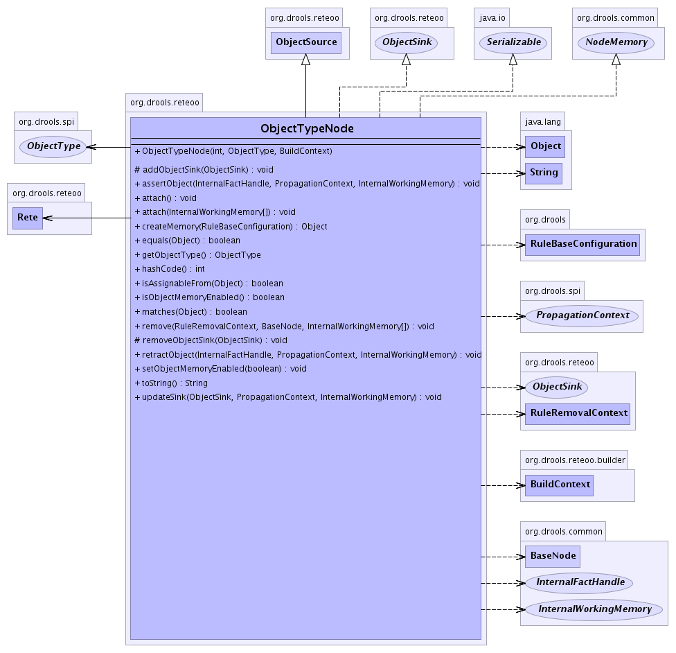

are responsible for filtering and propagating the matching
fact assertions propagated from the Rete node using ObjectType interface.
The assert and retract methods do not attempt to filter as this is the role of the Rete
node which builds up a cache of matching ObjectTypdeNodess for each asserted object, using
the matches(Object object) method. Incorrect propagation in these methods is not checked and
will result in ClassCastExpcections later on in the network.
Filters Objects coming from the Rete using a
ObjectType semantic module.
- See Also:
ObjectType,
Rete,
Serialized Form
-
- 
| Fields inherited from class org.drools.common.BaseNode |
id |
| Methods inherited from class java.lang.Object |
clone, finalize, getClass, notify, notifyAll, wait, wait, wait |
ObjectTypeNode
public ObjectTypeNode(int id,
ObjectType objectType,
BuildContext context)
- Construct given a semantic
ObjectType and the provided
unique id. All ObjectTypdeNode have node memory.
- Parameters:
id - The unique id for the node.objectType - The semantic object-type differentiator.
getObjectType
public ObjectType getObjectType()
- Retrieve the semantic
ObjectType differentiator.
- Returns:
- The semantic
ObjectType differentiator.
matches
public boolean matches(java.lang.Object object)
- Tests the provided object to see if this
ObjectTypeNode can receive the object
for assertion and retraction propagations.
- Parameters:
object -
- Returns:
- boolean value indicating whether the
ObjectTypeNode can receive the object.
isAssignableFrom
public boolean isAssignableFrom(java.lang.Object object)
assertObject
public void assertObject(InternalFactHandle handle,
PropagationContext context,
InternalWorkingMemory workingMemory)
- Propagate the
FactHandleimpl through the Rete network. All
FactHandleImpl should be remembered in the node memory, so that later runtime rule attachmnents
can have the matched facts propagated to them.
- Specified by:
assertObject in interface ObjectSink
- Parameters:
handle - The fact handle.object - The object to assert.workingMemory - The working memory session.
retractObject
public void retractObject(InternalFactHandle handle,
PropagationContext context,
InternalWorkingMemory workingMemory)
- Retract the
FactHandleimpl from the Rete network. Also remove the
FactHandleImpl from the node memory.
- Specified by:
retractObject in interface ObjectSink
- Parameters:
handle - The fact handle.object - The object to assert.workingMemory - The working memory session.
updateSink
public void updateSink(ObjectSink sink,
PropagationContext context,
InternalWorkingMemory workingMemory)
- Specified by:
updateSink in class ObjectSource
attach
public void attach()
- Rete needs to know that this ObjectTypeNode has been added
- Specified by:
attach in class BaseNode
attach
public void attach(InternalWorkingMemory[] workingMemories)
- Specified by:
attach in class BaseNode
remove
public void remove(RuleRemovalContext context,
BaseNode node,
InternalWorkingMemory[] workingMemories)
- Description copied from class:
BaseNode
- Removes the node from teh network. Usually from the parent
ObjectSource or TupleSource
- Specified by:
remove in class BaseNode
createMemory
public java.lang.Object createMemory(RuleBaseConfiguration config)
- Creates memory for the node using PrimitiveLongMap as its optimised for storage and reteivals of Longs.
However PrimitiveLongMap is not ideal for spase data. So it should be monitored incase its more optimal
to switch back to a standard HashMap.
- Specified by:
createMemory in interface NodeMemory
isObjectMemoryEnabled
public boolean isObjectMemoryEnabled()
- Specified by:
isObjectMemoryEnabled in interface ObjectSink
setObjectMemoryEnabled
public void setObjectMemoryEnabled(boolean objectMemoryEnabled)
- Specified by:
setObjectMemoryEnabled in interface ObjectSink
toString
public java.lang.String toString()
- Overrides:
toString in class BaseNode
hashCode
public int hashCode()
- Uses he hashCode() of the underlying ObjectType implementation.
- Overrides:
hashCode in class BaseNode
equals
public boolean equals(java.lang.Object object)
- Overrides:
equals in class java.lang.Object
addObjectSink
protected void addObjectSink(ObjectSink objectSink)
- Description copied from class:
ObjectSource
- Adds the
ObjectSink so that it may receive
FactHandleImpl propagated from this
ObjectSource.
- Overrides:
addObjectSink in class ObjectSource
- Parameters:
objectSink - The ObjectSink to receive propagated
FactHandleImpl.
removeObjectSink
protected void removeObjectSink(ObjectSink objectSink)
- Description copied from class:
ObjectSource
- Removes the
ObjectSink
- Overrides:
removeObjectSink in class ObjectSource
- Parameters:
objectSink - The ObjectSink to remove
 org.drools.common.BaseNode
org.drools.common.BaseNode